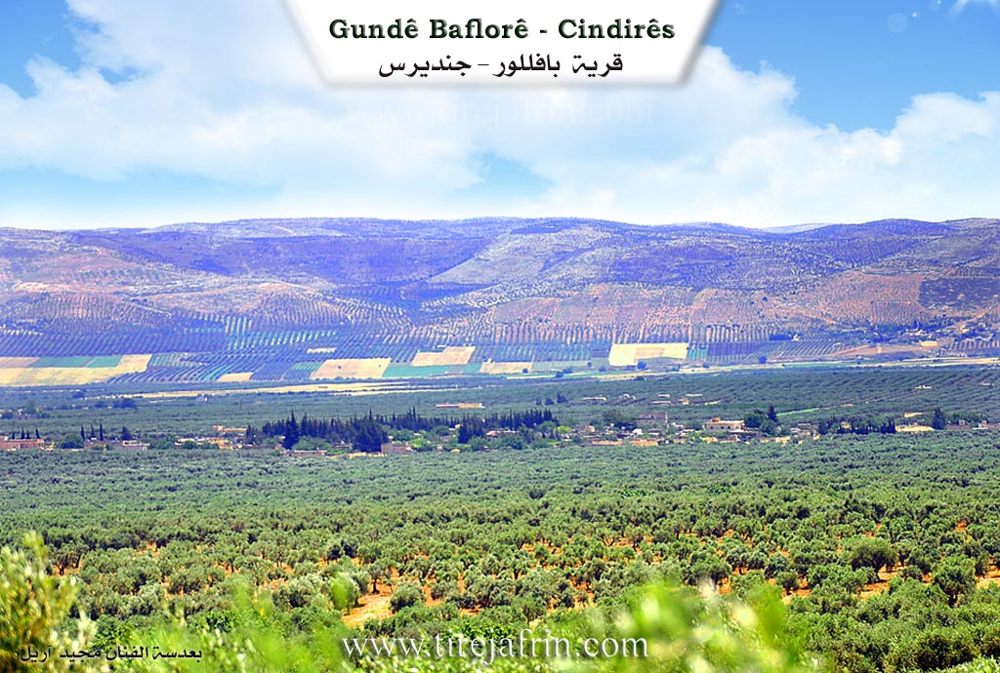
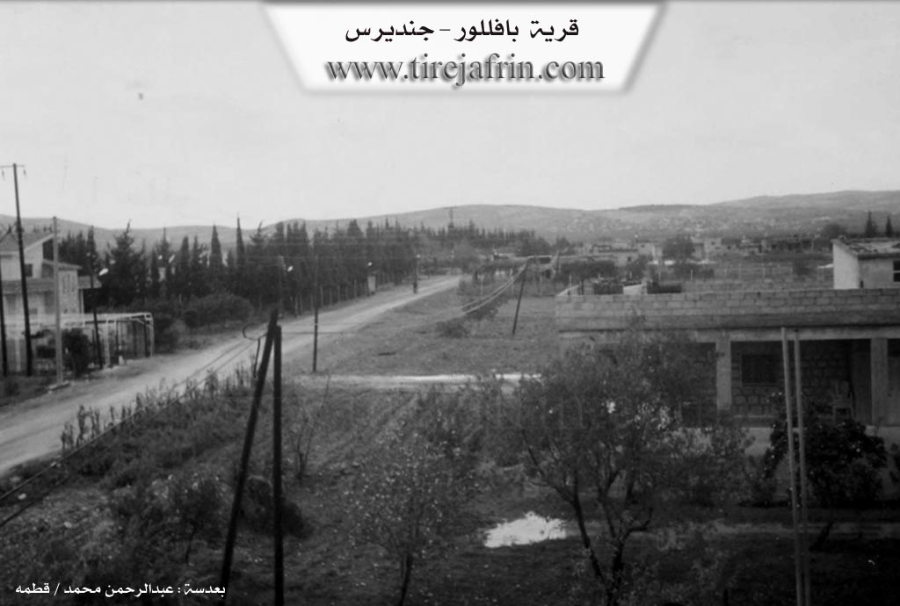

General Information
Nahiya (Subdistrict)
Cindires
Also Known As
Al-Zahra, Baflllor, Baflor, الزهرة, بافللور, بافلور
Tribes
Lor, Şiwaya
Families, Clans, etc.
Al Omer, Mistefa Omer Axa, Silêman

Photos


Basic Information about Baflor
Source: Tirej Afrin
Etymology: Believed to be of Syriac origin from Ba + Flor
Foundation Date/Period: Approximately 300 years ago
Other Landmarks: Geliyê Sîlê
Summaries
I. Summary from TirejAfrin Site (English) of Baflor
Source: https://www.tirejafrin.com/site/kura%20afrin%20Cindires%20-%20Baflor.htm
The following is stated in the book جبل الكرد (عفرين) دراسة جغرافية Çiyayê Kurmênc (Efrîn): A Geographical Study by د. محمد عبدو علي Dr. Mihemed Ebdo Elî regarding Baflor: 1554 inhabitants, 735 hectares, 3 kilometers, 244 meters altitude.
It is believed that the name is Syriac from Ba + Flor. We do not believe that the Arabized name Al Zahra bears any relation to the ancient name. It is a large village through which the paved road leading to Şiyê passes.
The following is stated in the book عفرين .... نهرها وروابيها الخضراء Efrîn... Her River and Her Green Hills by the writer عبدالرحمن محمد Ebdulrehman Mihemed from the village of Qetme: Baflor is a village in Çiyayê Kurmênc administratively following the Cindirês district, Efrîn region, Heleb governorate. It is a small village located at the bottom of the southeastern slope of Çiyayê Kurmênc and in the western Cindirês plain. It is surrounded by olive trees on all sides. Its soil is clay, alluvial, and plain like. It is 4 kilometers away from the town of Cindirês towards the northwest.
It is bordered to the north by a fertile plain planted with olive trees, the Şiyê road, and the village of Kefer Sefrê. To the south, it is bordered by a fertile plain planted with olive trees, the Riya Cindirês-Hemam (Cindirês Hemam road), and the village of Axcele. To the west, it is bordered by a fertile plain planted with olive trees, Geliyê Sîlê (Sîlê valley), and the village of Aşkan Xerbî. To the east, the Riya Cindirês-Şiyê (Cindirês Şiyê road), a fertile plain planted with olive trees, the town of Cindirês, and the village of Yelanqoz.
The number of its houses reaches 65, and its age is approximately 300 years. Its old houses are made of stone and mud with wooden roofs, while the modern ones are concrete and spread towards the south and west and along the Şiyê road. There are several beautiful luxurious houses in the middle of the village belonging to the Al Omer family, who are the owners of the village. An electricity network is available, as well as water from a well dug near Kefer Sefrê belonging to the state. It contains a primary school, a telephone, and two presses for pressing olives.
Most of its inhabitants work in cultivating olives and grains via rain fed agriculture, and irrigated agriculture from artesian wells for summer vegetables and fruit trees such as walnuts, pomegranates, and apples, alongside raising sheep and goats. Among its most important families are the family of Silêman and Mistefa Omer Axa, who are residents of the village and its founders, and among the oldest of them. Administratively, the village belongs to the Cindirês municipality. It connects to the district center and neighboring villages via an asphalt road passing through its center to the town of Şiyê.
The village Mukhtar is Abidîn Hesen Heso.
Sources:
- Book: جبل الكرد (عفرين) دراسة جغرافية Çiyayê Kurmênc (Efrîn): A Geographical Study by د. محمد عبدو علي Dr. Mihemed Ebdo Elî.
- Book: عفرين .... نهرها وروابيها الخضراء Efrîn... Her River and Her Green Hills by عبدالرحمن محمد Ebdulrehman Mihemed from the village of Qetme.
- Preparation and execution by the Manager of Navenda Tirej Efrîn: Ebdulrehman Hacî Osman.
- 20/12/2013
II. Summary of Baflor from Multi Channel
The village of Baflor is located 2 kilometers from Cindirês in the Efrîn region. Founded between 1860 and 1870, the village was established by a single ancestor who originally lived in the plains of Şêx Hadîd and Tirkiye. This ancestor had a son named Omer, who initially purchased land and settled in a nearby village called Bazyan, which is now abandoned. Later, Omer and his descendants decided to relocate to their agricultural lands in Baflor, officially establishing the village. The residents trace their lineage to the Lor tribe, a Kurdish confederation originally from Îran. According to local tradition, the name Baflor derives from Bavê Lor, meaning Father of the Lor, referring to the founding ancestor of this tribe.
The founding ancestor had three wives, resulting in the village population dividing into four distinct lineages of cousins. Decades later, around 60 to 80 years ago, additional Kurdish and Arab families moved to the village to work as farmers. They eventually settled in Baflor, though they do not share blood ties with the original founders. Today, the village hosts approximately 80 resident families, comprising about 400 people. They are joined by 70 to 80 displaced families originating from Hama, Idlib, and the Şiwaya community from Hesekê.
Historically, the village relied on rainfed agriculture, cultivating wheat, barley, chickpeas, and cotton. Today, the local economy is entirely dependent on olive farming, supplemented by minor household animal husbandry. Traditional Kurdish customs were prominent in daily life. Women wore traditional clothing such as the Fîstanê Kurmancî and the Japonî style dress. Traditional dishes included Ketiyê, a winter meal made by boiling chicken with cracked wheat and spices, and Boraniye, a yogurt based soup with meat and vegetables.
Traditional weddings in Baflor lasted seven days. Village drummers played a crucial role in matchmaking by identifying suitable brides during other celebrations. When the bride was brought to the house of the groom on horseback, a young boy was traditionally thrown onto the horse behind her in the belief that her firstborn would be a boy. Traditional songs such as Go çete kel ser tirvana were sung during these festivities, which local women translate as a story about brides gathering under a tree at the foot of a mountain.
A historic 100 year old mill still operates in the village, originally built by an ancestor. It features an antique English engine and specialized machinery brought from the Erqûb neighborhood in Heleb, which historically supplied mills across Sûriya, Urdun, and Iraq. The massive grinding stone was hand carved by an elderly craftsman in the village of Sinarê and manually rolled over 20 kilometers to Baflor. This mill remains one of the oldest in the region, alongside an inactive one in Basofan. The main road through the village also serves as a connection to Eşkan.
The recent earthquake severely impacted Baflor. Approximately 90 percent of the houses sustained heavy damage, forcing many residents to live in tents. The local school was also severely damaged, creating an unsafe environment for students. Furthermore, the earthquake caused water levels in local artesian wells to drop significantly, leaving the village dependent on external water tankers. Despite these immense challenges, a local organization successfully completed a sewage network project for the community.
II. Summary of Baflor from Multi Channel 2
Located in the countryside of Cindirês, the village of Baflor is home to a remarkable piece of living history: a traditional stone mill that has been operating continuously for over ninety years. This historic mill forms a deeply rooted part of the community identity, representing a profound connection of authenticity and belonging for the local residents. According to the villagers, the rhythmic sound of the grinding stone has become a seasonal piece of music that they eagerly anticipate hearing every year during the harvest times.
Despite the widespread availability of modern automated milling machinery in the region, the people of Baflor and the surrounding areas specifically seek out this traditional stone mill to process their wheat crops. Local men explain that families bring their wheat harvests here to be ground and prepared for their winter provisions. The traditional process involves placing the grains on the massive grinding stone and adding water to carefully remove the outer husks. Once this first stage is complete, the grains are taken through a second milling phase to be finely ground into bulgur, which is a staple ingredient for cooking in the region. The villagers firmly believe that the taste of the wheat and bulgur produced by this traditional manual stone method is vastly superior to anything produced by contemporary industrial mills.
Throughout the past nine decades, this mill has stood resilient, remaining faithful to the people of Baflor, who have in turn reciprocated this loyalty. The structure has withstood various harsh weather conditions over the years. However, the recent devastating earthquake that struck the region severely impacted the building, causing deep cracks in its historic walls. The current owner of the mill, who inherited the historic site directly from his grandfather, initially feared that the damage was too extensive and that he lacked the financial and physical capacity to repair it.
In a powerful display of community solidarity and dedication to their ancestral heritage, the residents of Baflor refused to let the mill fall into ruin. Community members actively reached out to the owner, offering their full assistance to restore and repair the damaged structure. They insisted that the legacy of their ancestors must not be lost and that the great stone wheel must continue to turn. The owner emphasized that his primary motivation is not financial profit or business gain, but rather the preservation of a priceless cultural artifact. He is currently teaching his children the traditional milling trade to ensure that this invaluable skill and historical monument are passed down to the next generation.
The stone mill of Baflor is considered not just a local treasure, but a piece of broader human heritage that has long inspired poets and writers. Today, despite being over ninety years old, the traditional stone mill of Baflor continues to operate as if it were brand new. Through the collective efforts of the community, it remains a vibrant working monument to the past. This report was documented by Qusay El Ehmed for the Heleb El Yewm network in Cindirês.
Transcriptions and Subtitles
| Source | Video | Subtitles | Transcript |
|---|---|---|---|
| Multi Channel 1 | Watch Video | Download SRT | View Transcript |
| Multi Channel 2 | Watch Video | Download SRT | View Transcript |
Foundation/Origin Information of Baflor
The Omar family are the village owners. Among its most important families are the family of Suleman and Mustafa Omar Agha from the village residents, founders, and oldest residents.
Source: TirejAfrin Site
Possible Village Name Meaning of Baflor
It is believed that the name is Syriac from "Ba + Flor". The Arabized name "Al-Zahra" is not believed to relate to the old name.
Source: TirejAfrin Site